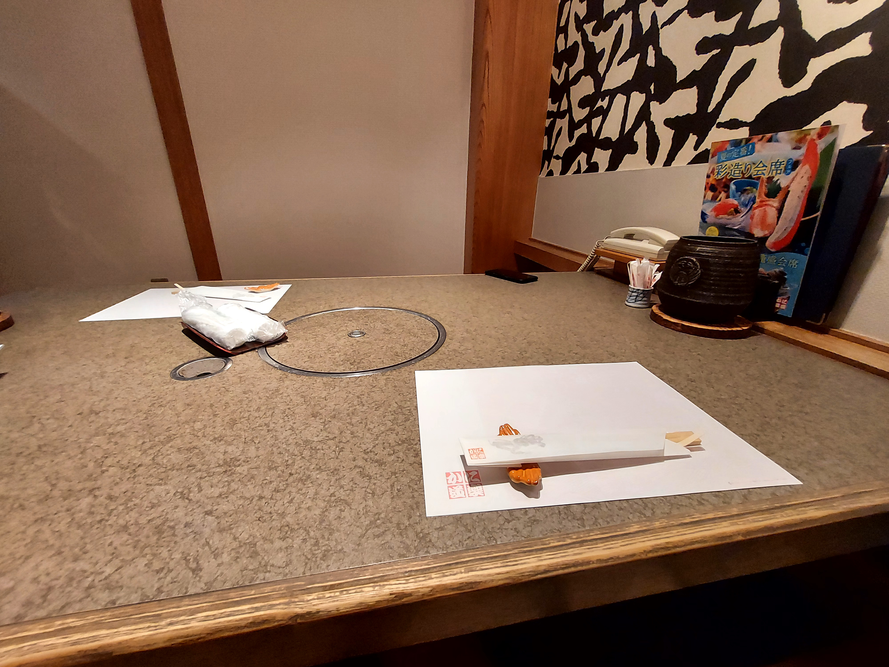
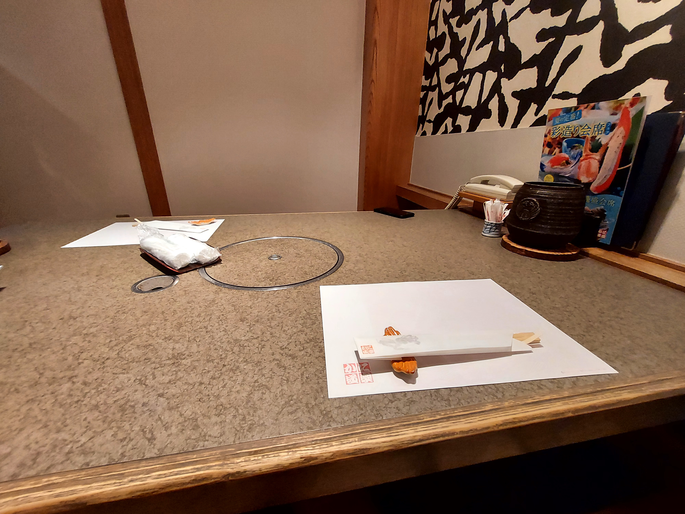

About all places we visited
Tokyo
Yodobashi Akiba
It is a multiple story mall with a huge diversity of goods in there. You can probably find there anything starting from the smart toilet seats and ending with expensive watches, and that was probably located on the same floor. Everything is bright and clean, it's hard to focus on 1 thing and you just keep finding new interesting staff. That was a nice place to visit at first, because it shortly described how Japan really is.


Manga stores
I won't list all of the manga stores we visited during that day because it was more than 10 for sure and they were pretty much the same. It's just the same book store we have in our country but instead of books there is manga. Different genres, different categories, all kinds of stories. There is pretty much equal amount of anime themed accessories so you can find practicly anything there. Most of them are taking multiple floors in buildings and some have 18+ category located on the last one with DVDs, manga and others, but unfortunately, they didn't have those which are popular overseas or at least I couldn't find them.

Gyukatsu Motomura Akihabara Branch
This restaurant was located underground and when we got there, there was no line so we sat and ate our food. It was really good, an air there was quite hot because of no windows but I felt high quality there and from this place I discovered that food at restaruants costs way lower than I expected and portions were enourmous, so everyday we had a lunch in a restaurant.

Reiyukai Shakaden Temple
We didn't plan to visit this temple, but on our way to Tokyo Tower we just couldn't help when we noticed a quizzy roof to go check it out. This is a conference hall and luckily nothing happened during our visit so we peacefully observed it, it took less than 10 minutes so if you pass it you might as well check it.
Tokyo Tower
When I say this building was massive I really mean it. Again, I planned to just witness it from a short distance, but my dad decided to just go there and buy tickets for 30 euro for both of us. And honestly, it was worth it and I am glad he did it. We were given an audio-guide where we could select a language and then hear about the history of this tower. On the half way to the top we stopped on a floor where we were photographed. On the peak we could set a direction we were looking on and the guide would explain what is located there. It was said that it's possible to see Mt.Fuji from there but it's very unlikely. There is also a bathroom on the top so that helped a lot. On the way back you can actually take stairs and go all the way down by feet. We did so and wouldn't really do it again. Down below there was a big souvenier shop where we could get our photo printed for free in a newspaper page, or pay 10 euro and get it printed in a bigger size.

Shibakoen
We didn't really explored it that much so we just passed through it till we got to our next destiantion. But on our way we found Hokora which is a tine Gods house and a snake which really surprised me.
Zōjō-ji Temple
We walked through the cemetery, and unlike ours, it looked very decent and clean, there were plenty of brushes and large spoons that you could use to clean the grave. We then entered Zojo-ji and there we discovered for the first time that each prayer consists of throwing coins into a special box. and witnessed Buddha statues. It was completely indistinguishable from the pictures, and the atmosphere of a church reigned inside. The other buildings were not so remarkable. The gates were told to be the only structure which was not reconcstructed and they were really big and beautiful.

Four Bodhisattva Statues
This place was located near the Zojo-ji and we got our tickets from a woman next to the entrance for 300 yen and there were just some statues so I can't say that much. I wasn't really impressed but for 300 yen we didn't waste much.

ART AQUARIUM MUSEUM
I had this in my plan but only as optional thing because it was seasonal but I didn't check if it would be open when we got there, but due to huge luck we decided to go there and that was really a waste of 30 euro. There were lots of installations with fish but nothing special, there are far better things to spend these 30 euro so keep then for later.

Tsukiji Outer Market
We didn't go to auction because it is practically impossible to get there. If you want to go for the free one you have to get there at 3 or 4 am because only around 30 people are allowed to be there watching so we just went to eat there.
Marukita Seafoods No.1
We went there because it looked local and even though it wasn't as prestige as previous restaurant food was still good and no problems occurred. We ordered sashimi with rice and it was lit, fish was fresh and extremely tasty, I really liked it and I got my belly full.
Sensō-ji main hall
There were a lot of people in kimono and even some school trip happened there, it was a cool festival atmosphere and Senso-ji wasn't the only cool building there. There even was a small nature area with greenness and we could chill there. All in all, really cool.


Tokyo Skytree
We bought evening tickets the same day we went there so we could enjoy night city and compare to Tokyo Tower. There were 2 floors - 350th and 450th. I honestly recommend to take all the pictures on the 350th one because even though there are less people on 450th the lighting there just ruins everything. The view was astonishing and the lights went till the horizen.It was an amazing experience and I would totally visit it again and put it the first in my list.


Pine of the Moon
That's is basically a tree shaped in a ring. There are multiple small shrines around it and by going next to it and watching it through you can actually see the next destination creating a beautiful picture.

Shinobazunoike Benten-do
That is a pretty much the same temple as others, it was located in the middle of the pond and I expected it to be clear, but it was fully covered with plants. We saw there turtle and stayed under a roof for a little while the rain was going.

Gojoten Shrine
This shrine was amongst many others and it was marvelous to walk around there but we mainly were there to wair for rain to become weaker.
Japanese Sword Museum
In order to get better understanding of swordsmithing we visited this museum and it fulfilled our desires. We were given a booklet which described parts of katana, different types and with that knowledge I analyzed provided swords in a room. There alse were books which contained prints of katanas to remake them in the future. I really enjoyed it, since I could actually distinguish different temeprings, while my dad haven't done preparations and went straight for the swords and had nothing to do for the rest of the time.
Former Yasuda Garden
That was the best garden we've ever visited. Among all buildings there was a small park with a little pond with fish and turteles in it. Everything was super clean with no trash lying around. It was very peaceful there and really great for relaxation. Totally recommend.

Tokyo Memorial Hall
It was a church like building with lots of seats inside there to hear the prayers and we just wanted to see what was it about since we noticed it on the way to Sword museum, but it was nothing special.
The Sumida Hokusai Museum
Unluckily, we visited it the time when half of it was under reconstruction. But neverminding that there was still enough of paintings to see. I don't usually enjoy art but that interested even me. I liked the style and there also were some manga made by him, for exmaple soldiers dancing and it was quite impressive how he could show all the motions, so pretty alright.

Ueno Zoological Gardens
In this zoo for relatively cheap price we could explore a whole new animals we'd never seen before in real life. There was a huge line for pandas and an old man stood there with a paper which said that we would wait around 25 minutes and he was correct. Sadly there was only 1 small panda and we could see it for 1-2 minutes only. But as we went further we saw that there was a big panda near there but we had to make a loop around others animals. On the way there there were also red pandas and they were kind of cute. As we approached the big panda it quickly turned around and started eating bamboo and for at least 10 minutes it contidued to do it so we left. We then checked Small Mammal House and Vivarium, both of them included animals we haven't seen before, so it was a nice experience. One more highlight was gorillas. They had a really big area just for them and ranged from a little baby till an old gorilla father. We were hungry by that time so we couldn't check all animals so there is much more to explore.


Kura Sushi
This restaurant provides and interesting experience of eating. We first self checked-in and went to our table. By opening the lid in it you can get yourself sauces, green tea powder, marinated ginger and chopsticks. There is also a dispenser of boiling water for the tea and cups above the seats. Next to the table is constantly moving conveyor with plates. They have sushi in it and you just pick those you liked. After eating you drop the plates in a specail hole and machine counts your total bill based on that. You can also order special meal on tablet and it will be delivered on second conveyor above the previous one. For every 5th plate there is a game where you can win a gacha ball, it requires no interactions so it's complete luck. Sushi weren't something special but I can't complain about anything.
Shibuya Scramble Crossing
When I saw the pictures of it I thought it was probalby only on busy days, but I quickly realised my mistake when even on the way to Shibuya a whole train was completely fulled with people. As we left the station there was massive crowd. I guess this crossing is worth visiting for 2 reasons: amount of people and buildings with big billboards on them, esspecially in the night it looks amazing.
Hachikō Memorial Statue
It is located right next to the one of the exits from metro and there was even a line in order to take a photo with it, but for me it was not a big deal.
Mandarake
This manga shop was located in the underground and it had huge divesity of books. They were second-hand but in very good condition. Still couldn't find what I wanted.
ONE PIECE Straw Hat Store
In order to but at least something I wanted we went here. There were lots of things to choose from but I decided to but a polo-shirt and everything costed a bit too much, but since we had enough money to spend we went with it, so if you are a One piece fan definetly worth visiting.
Gyubei Souan
It was a really fancy restaurant which served wagyuu beef which you had to prepare yourself on the grill installed in the table. The prices were high but it was definetly worth every penny. It was so far different from the regular beef we ate, and it literally melter in our mouths. Everyone should try this at least once.
NEW YORK BAR
This bar could be seen in a film "Lost in Translation", and that was the reason my dad wanted to go there. It was a huge building with lots of floors. After a few minutes investingating we understood how to get to it. First, you have to enter the first elevator and get to about 43th floor and then switch to the second one and get to the top. After getting to the 43th floor we realised that there is another sort of bar here but it was already closed. Instead of walls there were big windows which were covered with curtains, so we moved them a little and got an astonishing view on city. We made some photos and tried to go to bar, but we were asked to go back because of dresscode. So for free you can actually visit the first bar and peacefully view a night Tokyo.
Shibuya Center Street
It was for sure better on the pictures than in real life since it wasn't as bright and colorful so you can just pass it.
Kawaguchiko
Kitchen Kurau
The best way to understand and enjoy different culture is to visit its local places and this restaurant is one of them. Here we ordered two udon bowls which came with rich boullion, vegetables and horse meat. The restaurant itself wasn't that big but at the same time quite spacious. There weren't lots of people so we quietly enjoyed our meal as we were sitting on the floor, the way it was suppoused to be always. Definetly should visit one of those on the trip there because it doesn't come close to any other chain restaurants.

Chureito Pagoda
In order to get there we had to climb in a hill for around 20 minutes and pagoda itself is very beautiful. Most people come here to take a photo of it and a Mt.Fuji, but only in rare ocassions it can be actually made since most of the time there are a lot of clouds and that day there was even a mist. There is also a possibility of meeting boars, bears or even monkeys. You can actually go a bit higher and sit there under a roof and enjoy the view if you got one.


Fujiyama Onsen
After a long and a tiring day nothings beats the bath in a natural hot springs. That is exactly why we spent about an hour just to get there and it was the greatest choice we could make. As you walk in you first unshoe yourself and put the boots in a cell. Then you ask a cashier to go inside and she will provide 2 towels, one for drying and the smaller for putting it on the head while bathing. Next step is to go to the locker room and undress. Put clothes in a locker and keep the key. Then enter the room with baths. Firstly, wash yourself in a shower(it is done sitting), they provide all sorts of washing liquids so no worries here. And only now you can enter baths. There were all sorts of those: regular, carbonated, jacuzzi, cold, with sunbeds and of corse mineral one. The hot spring was located on the street and the walls of it were made out of big rocks and there was literally salt and I guess other minerals on them so it was no ordinary water for sure. They also had sunbeds outside the pool to cool down after it as the water was 40 degrees Celcium. They also had a sauna which was 90-100 degrees and before entering there you have to grab another towel which you would place under yourself since you are fully naked and there is no need to leave behind unwanted body fluids. As you finish bathing you go back to the locker room and dry yourself up. Even in the mans changing room there were all sorts of hygiene things to use. When leaving you have to pay in a machine for your visit and you are free to go.
Mount Fuji
We weren't lucky to see it that day because it was extremely cloudy, however, the next day at 4 am we could for less than a minute witness it without any objects getting in a way and it for sure looked amazing. I have never seen something so big and nature made since in Latvia it is mainly plains so it was an unordinary experience which I highly enjoyed.
Kyoto
鳥さく 清水京阪五条店
Unfortunately, there was no English translation, but basically that is a karaage(deep-fried chicken) restaurant. It was nothing special but one thing that I noticed was that in most of these places there is a water dispenser for free to use, so less interactions with people needed. The food was good, but I made a mistake when I added chicken to the soup and it got swollen. All in all it was alright.
Kyoto Dai-jingū Shrine
On the way to the next destination I noticed this shrine. It was a really small one and it got anime posters on which caught my attention. Besides from that it had nothing else to offer.
Movix
I haven't noticed much of the difference here from other cinemas, but you could buy the ticket yourself from the machine and there were a lot of toys and accessories you could buy based on the films showed at that time.
Japan Culture & Character Shop Guf 京都店
This is another anime shop, on the first floor there were mangas(some with erotic content but not 18+), clothes and accessories. On the forth there was an adult section with huge variety of manga and DVDs, it also included real content. On the third, however, there was a sex shop with again all sorts of things and even those I haven't seen before. I guess anyone could find there something what would suit them and one of the highlights was an artifitial female genitalia which was supposed to be a representation of one made-up character.
Kinkaku-ji
This temple was the first one we visited in Kyoto and there we discovered that those aren't the only thing to look at and you can walk around a whole park there. Near the entrance there was a huge bell and you could actually ring it. For 200 yen you get the ability to hit it with the special wooden column and anyone in the area would hear it. They also give a postcard as a souvenier for it. The temple itself was pretty good, it had a nice location near the pond and everything was very clean, so our guess is that money spent on a ticket goes to cleaning the whole area. We could not enter the temple but it was still enough to satisfy us.

Ryōan-ji
It was located in a huge park and there also was a pond. We had to go quite far to get to the temple and on the way there there were some buildings for personal and some statues. Here you could enter the temple and there was the famous stone garden. It wasn't overall that good but the location and price allow to still visit it.

Kyoto Railway Museum
This is exatcly the type of museums I always wanted to visit. Unlike many others where it's just some artifacts and plain facts from history this place provided interactive games to better understand how things work and developed. You could enter any train and check the insides, see how wheels for them were designed, switch railways, become a worker who fixes problems on the road(digitally), try an uniform, see the whole movie with small real trains going around the model city and many other things. This place had a lot of kids in it, but it didn't ruin the experience as only some of them were crying and screaming.
Kyoto Aquarium
In this place we saw many sea animals we hadn't even known about. It started with some gray long stone-like fish, after that there was a cafe with seals swimming next to it. Then there was an amazing big aquarium with all sorts of fishes there. First you saw it through a samll window and as you went down there was a big glass panel which allowed to see all parts of it. Some sofas allowed to watch it for quite a time and most people gathered there. Then we went to the second floor which was mainly occcupied with jellyfish. There were different kinds with some installations and even how they breed them. Then followed some small aquariums with unusual fishes(mainly 1 or 2 for each aquarium). On the third floor in the open air there was a large pool with 2 dolphins, but sadly, we weren't on time for their performance. As we moved to the exit there was a small garden with rice field and a river.


Kyoto Tower
Near the Kyoto station there is this tower. We haven't visited it and just watched it from a distnace. It wasn't as appealing as Tokyo ones but still alright.
Nijō Castle
We were first welcomed by a magnificent gates covered with gold after which we could already see the temple itself. All of the following structures were kept safe by a moat. There also was a pond with fish and multiple buildings. The castle itself was made for shogun to meet his guests. There also were "singing" floors which we mistook for just poor structuring. And on the corner of this land there was a hill where one can view all castle.

Chion-in Temple
The place was high above the ground and we had to climb the stairs and pass through enourmous gates with lots of details. In the main building there were some buddhists praying so loud you could hear it on the street. Some of the buildings were reconstructed, but there was still a lot to see. We went even further and higher and there was a small room with open walls and quizzy musical instrument for praying. There also was a huge bell.


Kōdaiji Temple
Can't really remember what was there, but we again walked around the buildings and nature, and could again walk into the temple. We also walked around the graveyard and bamboo forest.
Ryozen Kannon
This place had a huge scuplutre of Buddha, and you could enter inside him and there were 12 sculpures representing zodiac signs, nothing special we were just impressed by the size of it.


Ninenzaka
This street had ancient-like buildings and they were reconstructed to be restaurants or candy shops. We finally understood where the tourists were and we could barely pass through.
Kiyomizu-Dera
Firstly, we saw huge gates and a pagoda. A lot of people were taking pictures there. We then moved further and there it was, Kiyomizu-dera. Standing there was nothing special, however, when we went on and saw it from the distance we were flabbergasted, it was amazing.

Kiyomizu-Dera Otowanotaki Falls
Beneath the Kiyomizu-dera there is a famous waterfall with 3 streams, depending from which you drink you will be granted a certain wish. The line was pretty long but we were just excited to try it even though we still don't know what we should get.
Ramen Yokozuna - Gojo
This place wasn't some fancy restaurant, but we still got served an amazing meal and had no complaints there. The staff, however, had troubles explaining us how to pay(even though we knew, just had forgotten).
Tenryu-ji
Honestly, after seeing so many temples I no longer found it interesting seeing new ones, and this one costed higher than others, so if you are still willing to see a nice temple with a pond near the hills and forest than help yourself.

Arashiyama Bamboo Forest
Due to the high amount of tourists going there bamboo is really worn off, but it still creates a nice picture of tall grass just surrounding you because we've never been to something like that before but that was pretty much it. It mostly served as a route from one place to another.

Okochi Sanso Garden
In order to enter this garden we had to pay but it was totally worth it. First we got to a house where we got served macha with some chulk-like candy. We then followed tha pathway and got to the next house. There was an area full of moss but it actually looked great becuase there was no trash or leafes lying there. As we moved further we could see a little house on the next side of the river on a hill. Then there was a small viewpoint of Kyoto. And closer to the end there was a house where you could write whatever you want in a notebook. We really liked it and were glad to go there, because we haven't planned it.


Arashiyama Park Kameyama Area
There wasn't anything particularly interesting there so we just passed through it in order to get to the next place but there was a very large river and some people were on boats where person used stick to push off the ground and go faster.

Arashiyama Monkey Park Iwatayama
The park itself was located on top of the hill so we first paid for the tickets and then climbed all the way to the top. As we were walking there were 2 fans which sprayed water and it was so genious and helpful I can't describe. There also were so questions you could try to ask and then see the answers about the monkeys and as we approached the top the voice explained us how to behave near them. Firstly, there was a cooling room where you could relax because that day it was extremely hot, there also was a feeding room in which you could enter and feed monkeys but we decided not to, and of course from such high you can see all Kyoto. Amount of monkeys was way more than I expected and they were also quite close to people. I was satisfied with this place and got down with a smile.


Kani Doraku Kyoto Honten
This was a very fancy and expensive restaurant. We tried crabs for the first time but I understood that I am not a big fan of it, and this place was for sure out of our league. We spent quite a lot there and the joy wasn't as big, so wouldn't go again.
 

KYOTO OWL'S FOREST
Here we could see and even touch different types of owls. The room wasn't that big, but still there were quite a lot of owls. The were cuffed to branches and couldn't fly off but they didn't try that. Some of them were labeled "I am new here" and "I am not in a mood", so you couldn't pet those ones. They had a really soft feathers and after petting some I was no more that scared of them. All in all, interesting experience.


Fushimi Inari Taisha
I new that this place was overrated and we shouldn't get there, but my dad insisted on going. There was a big gate and after that followed a path with smaller ones. They weren't as clean as on pictures and there were a lot of people. We just kept going higher and nothing changed. After 30 minutes I stayed on the checkpoint as my dad continued. I could again see Kyoto from there and there was a sunset creating a nice view. My dad returned and said that nothing was there, so we went back.

Kobe
Hakutsuru Sake Brewery Museum
This free museum provided an opportunity to find out how sake is being made and its history particularly in Kobe. There were multiple checkpoints with viedo-guide where you could choose the language and wax sculptures represented the manufactoring process. Decorations were really amazing and it was as if I really was part of this process. There also was a theatre with a 20-30 minute film about this companies history and unlike other company films it was actually fascinating. At the end there were souveniers and lots of sake types. You could try 3 of them from a dispenser and another machine dispensed for a few yen. That made us buy 4 bottles and then carry them all day.
The Great Hanshin-Awaji Earthquake Memorial Disaster Reduction and Human Renovation Institution
When we entered this museum there were absolutely no people. We got instructed were to go and for the next hour we were going together with a couple from Singapore. We first were shown a film of the earthquake in 1995 and its consequences. We then understood that there mostly worked really old people as volunteers. They looked really excited when they saw some tourists and esspecially ones which speak japanese. We were shown where, how, how often, why earthquakes happpen and even how structures are nowadays built to resist those. There also were some interactive games to play and I honestly liked it.
カフェ＆レストラン ミライイナ
In this restaurant we ate curry and even though it was spicy we still enjoyed it. It was located inside the previous museum so nothing special, just a nice meal.
須磨海水浴場
We visited a beach in order for my dad to swim in a Pacific ocean and there wasn't really anything else to do, the beach itself was pretty plain and inactive.

Kobe Nunobiki Herb Gardens
It was quite hard to locate how to get there because we had to pass through the building, but we managed to get there in time. We sat in cabin and went up. We could see whole Kobe from it as well as Nunobiki Waterfall and a dam. On top there was a building with cafe and a room where you could smell different scents; if you wanted, you could take a piece of paper of the scent you liked and buy it at the souvenir shop when you leave. You can go down by foot but we were quite late so we had to go back in cabin.


Nunobiki Waterfall
We had to go for quite long to get there, but it was worth it. The waterfall was amazing and I could watch it forever, however, we had to return and we chose to go along this river and there was another not as magnificent waterfall but still good-looking. The sound of stream was relaxing and I really like this part of nature.


Nagoya
Toyota Kaikan Museum
In this museum there also weren't a lot of people and sadly we weren't allowed to visit factory because they were still scared of covid, so we had to see what else they offered. We saw new cars, tested brakes system, saw how pain is applied and other things I already forgot about. Overall, we had to travel for quite a long time and expected something really great, but we left unsatisfied, so it was not worth visiting.